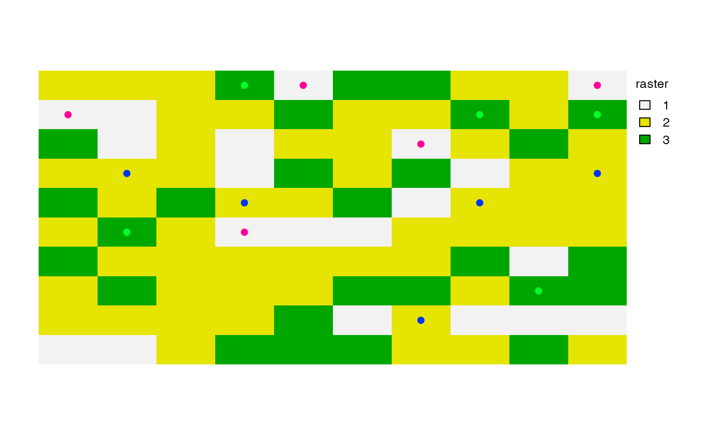

Take a regular sample
sample.RdTake a spatial sample from a SpatRaster, SpatVector or SpatExtent. Sampling a SpatVector or SpatExtent always returns a SpatVector of points.
With a SpatRaster, you can get cell values, cell numbers (cells=TRUE), coordinates (xy=TRUE) or (when method="regular" and as.raster=TRUE) get a new SpatRaster with the same extent, but fewer cells.
In order to assure regularity when requesting a regular sample, the number of cells or points returned may not be exactly the same as the size requested.
Usage
# S4 method for class 'SpatRaster'
spatSample(x, size, method="random", replace=FALSE, na.rm=FALSE,
as.raster=FALSE, as.df=TRUE, as.points=FALSE, values=TRUE, cells=FALSE,
xy=FALSE, ext=NULL, warn=TRUE, weights=NULL, exp=5, exhaustive=FALSE)
# S4 method for class 'SpatVector'
spatSample(x, size, method="random", strata=NULL, chess="")
# S4 method for class 'SpatExtent'
spatSample(x, size, method="random", lonlat, as.points=FALSE)Arguments
- x
SpatRaster, SpatVector or SpatExtent
- size
numeric. The sample size. If
xis a SpatVector, you can also provide a vector of the same length asxin which case sampling is done separately for each geometry. Ifxis a SpatRaster, and you are usingmethod="regular"you can specify the size as two numbers (number of rows and columns)- method
character. Should be "regular" or "random", If
xis aSpatRaster, it can also be "stratified" (each value inxis a stratum) or "weights" (each value inxis a probability weight)- replace
logical. If
TRUE, sampling is with replacement (ifmethod="random")- na.rm
logical. If
TRUE,NAsare removed. Only used with random sampling of cell values. That is withmethod="random", as.raster=FALSE, cells=FALSE- as.raster
logical. If
TRUE, a SpatRaster is returned- as.df
logical. If
TRUE, a data.frame is returned instead of a matrix- as.points
logical. If
TRUE, a SpatVector of points is returned- values
logical. If
TRUEraster cell values are returned- cells
logical. If
TRUE, cell numbers are returned. Ifmethod="stratified"this is always set toTRUEifxy=FALSE- xy
logical. If
TRUE, cell coordinates are returned- ext
SpatExtent or NULL to restrict sampling to a subset of the area of
x- warn
logical. Give a warning if the sample size returned is smaller than requested
- weights
SpatRaster. Used to provide weights when
method="stratified"- strata
if not NULL, stratified random sampling is done, taking
sizesamples from each stratum. Ifxhas polygon geometry,stratamust be a field name (or index) inx. Ifxhas point geometry,stratacan be a SpatVector of polygons or a SpatRaster- chess
character. One of "", "white", or "black". For stratified sampling if
stratais a SpatRaster. If not "", samples are only taken from alternate cells, organized like the "white" or "black" fields on a chessboard- lonlat
logical. If
TRUE, sampling of a SpatExtent is weighted bycos(latitude). For SpatRaster and SpatVector this done based on thecrs, but it is ignored ifas.raster=TRUE- exp
numeric >= 1. "Expansion factor" that is multiplied with
sizeto get an initial sample used for stratified samples and random samples withna.rm=TRUEto try to get at leastsizesamples- exhaustive
logical. If
TRUEandna.rm=TRUEfirst all cells that are notNAare determined and a sample is taked from these cells. This is useful when you are dealing with a very large raster that is sparse (most cells are NA). Otherwise, the default approach may not find enough samples. This should not be used in other cases, especially not with large rasters that mostly have values
Examples
f <- system.file("ex/elev.tif", package="terra")
r <- rast(f)
s <- spatSample(r, 10, as.raster=TRUE)
spatSample(r, 5)
#> elevation
#> 1 288
#> 2 NA
#> 3 497
#> 4 NA
#> 5 NA
spatSample(r, 5, na.rm=TRUE)
#> elevation
#> 1 458
#> 2 269
#> 3 271
#> 4 142
#> 5 202
spatSample(r, 5, "regular")
#> elevation
#> 1 479
#> 2 NaN
#> 3 NaN
#> 4 419
#> 5 290
#> 6 306
#> 7 281
#> 8 286
#> 9 NaN
## if you require cell numbers and/or coordinates
size <- 6
spatSample(r, 6, "random", cells=TRUE, xy=TRUE, values=FALSE)
#> cell x y
#> [1,] 5800 5.779167 49.67917
#> [2,] 7874 6.437500 49.50417
#> [3,] 843 6.429167 50.12083
#> [4,] 426 6.120833 50.15417
#> [5,] 2775 5.904167 49.94583
#> [6,] 2267 6.420833 49.99583
# regular, with values
spatSample(r, 6, "regular", cells=TRUE, xy=TRUE)
#> cell x y elevation
#> 1 7458 6.137500 49.53750 264
#> 2 7505 6.529167 49.53750 NA
#> 3 7411 5.745833 49.53750 NA
#> 4 5368 6.137500 49.72083 289
#> 5 5415 6.529167 49.72083 NA
#> 6 5321 5.745833 49.72083 NA
#> 7 3183 6.137500 49.91250 322
#> 8 1093 6.137500 50.09583 NA
# stratified
rr <- rast(ncol=10, nrow=10, names="stratum")
set.seed(1)
values(rr) <- round(runif(ncell(rr), 1, 3))
spatSample(rr, 2, "stratified", xy=TRUE)
#> x y stratum
#> 1 -126 63 1
#> 2 126 -27 1
#> 3 126 27 2
#> 4 -162 81 2
#> 5 18 -45 3
#> 6 -18 27 3
s <- spatSample(rr, 5, "stratified", as.points=TRUE)
plot(rr, plg=list(title="raster"))
plot(s, 1, add=TRUE, plg=list(x=185, y=1, title="points"))

## SpatExtent
e <- ext(r)
spatSample(e, 10, "random", lonlat=TRUE)
#> x y
#> [1,] 6.362453 49.60080
#> [2,] 6.214008 50.07085
#> [3,] 5.841767 49.53690
#> [4,] 5.832523 50.14225
#> [5,] 6.160047 49.56096
#> [6,] 6.504415 49.51819
#> [7,] 6.188561 49.58855
#> [8,] 6.299401 49.90880
#> [9,] 6.361697 49.46779
#> [10,] 6.250035 49.81599
## SpatVector
f <- system.file("ex/lux.shp", package="terra")
v <- vect(f)
# sample the geometries
i <- sample(v, 3)
# sample points in geometries
p <- spatSample(v, 3)